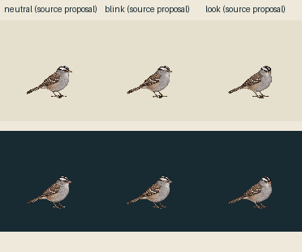
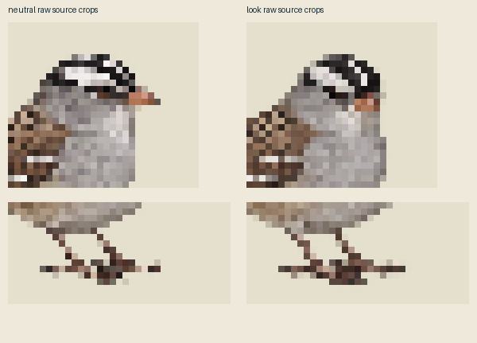

One new native head-attention drawing; exact existing neutral and closed sources reused. Whole-canvas legacy-world sampler, one shared palette/crop, no pose fitting or foot snap. Actual full stage 124 CSS pixels at DPR1; the fractional legacy world extent is preserved with a transparent ceiling margin. Raw source sampling and codec versions are shown separately.
| Surface | Raw full-stage RGBA | Shared codec / common crop |
|---|---|---|
| light | ||
| dark |
These are authored source clocks. The final sampled tick is held to the full deadline; no generated in-between or whole-body bob is claimed. Source usefulness awaits independent appearance and geometry review. Contacts are empty, physical support is unreviewed and runtime/live admission is false.

Enlarged source head and foot diagnostics:
